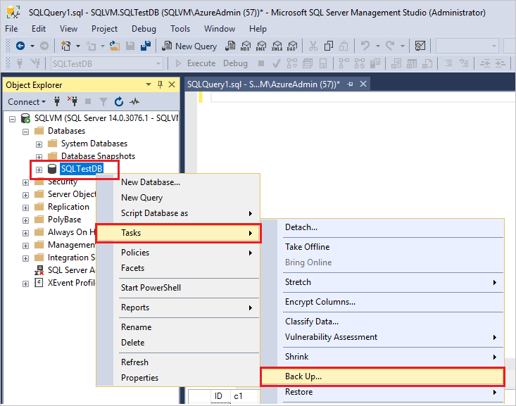

Comandos para poder realizar
acciones en una base de datos
en SQL Server
Crear una base de datos
- Crearemos una base de datos que tenga dos tablas y una referencia, en este caso tenemos jugador y equipo
- Ahora abriremos el command prompt para poder inicializar las tablas
- CREATE DATABASE TestData
GO - USE TestData
GO - CREATE TABLE Equipo ( Liga int NOT NULL, IdEquipo int NOT NULL, IdEstadio int NOT NULL, CONSTRAINT Equipo_pk PRIMARY KEY (IdEquipo) );
- CREATE TABLE Jugador ( IdJugador int NOT NULL, Edad int NOT NULL, IdEquipo int NOT NULL, CONSTRAINT Jugador_pk PRIMARY KEY (IdJugador) );
Como meter y extraer datos de una base de datos
-
INSERT dbo.Equipo (IdEquipo, IdEstadio, Liga)
VALUES (1, 2, 'El Libertador')
GO -
UPDATE dbo.Equipo
SET Liga = 'Libertadores'
WHERE IdEquipo = 1
GO -
SELECT IdEquipo, IdEstadio, Liga
FROM dbo.Equipo
GO
Como extraer un backup de una base de datos
Usando Transact-SQL
USE SQLTestDB;
GO
BACKUP DATABASE SQLTestDB
TO DISK = 'c:\tmp\SQLTestDB.bak'
WITH FORMAT,
MEDIANAME = 'SQLServerBackups',
NAME = 'Full Backup of SQLTestDB';
GO
Esto es solo para linux
sqlcmd -S localhost -U SA -Q "BACKUP DATABASE [demodb] TO DISK = N'/var/opt/mssql/data/demodb.bak' WITH NOFORMAT, NOINIT, NAME = 'demodb-full', SKIP, NOREWIND, NOUNLOAD, STATS = 10"
Para Windows Server 2012
- Para este medio lo haremos a traves del interfaz gráfico:
- 